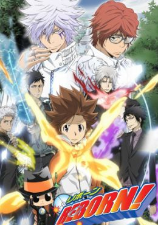

Tsunayoshi Sawada (Tsuna) era un chico normal hasta que su pariente Timoteo (el 9º capo de la familia Vongola) le comunica que él va a ser su sucesor. Para que Tsuna este preparado para el momento en el que el sea el 10º capo, manda a su casa a un tutor personal llamado Reborn que le ayudara a ser un buen capo gracias a un arma especial de la familia Vongola, y que en ciertas ocasiones le ayudara a continuar su vida normal de una sola pieza. Luego aparecieran mas personajes que le harán la vida mas difícil y a la vez mas divertida a Tsuna.